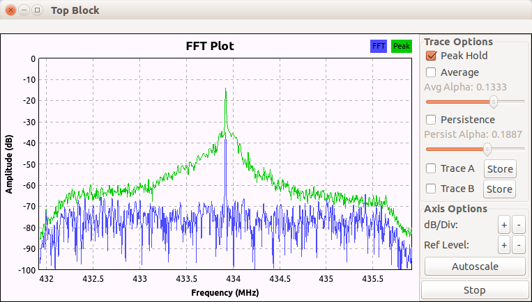
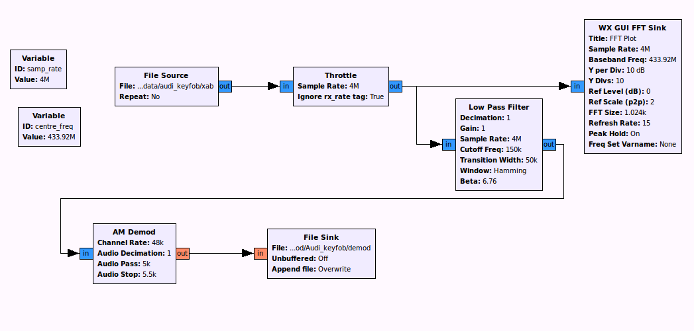
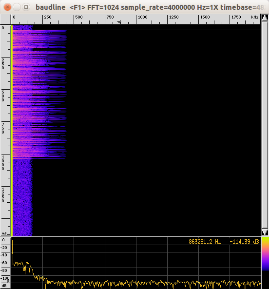
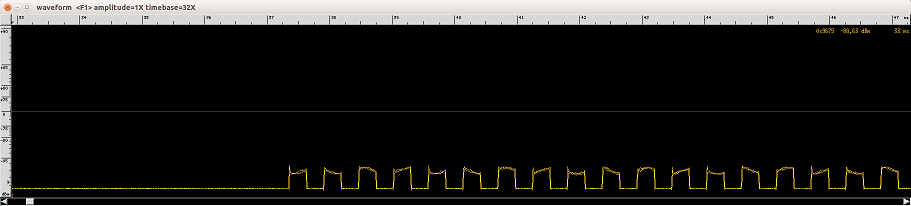
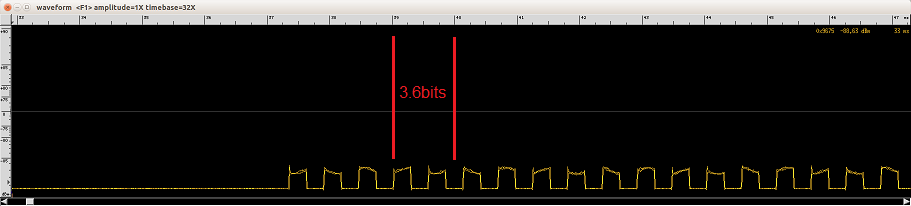
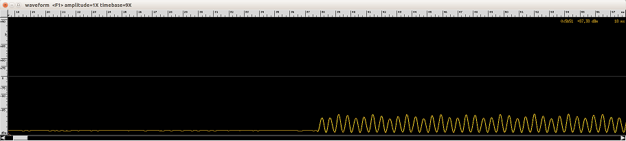
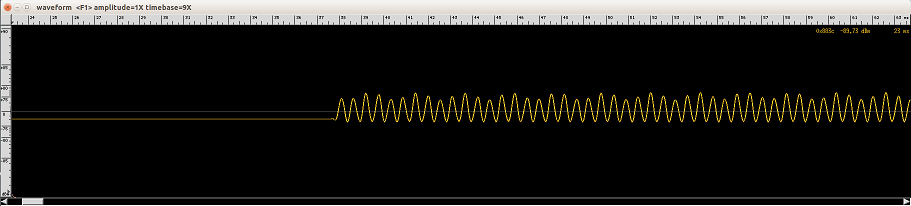
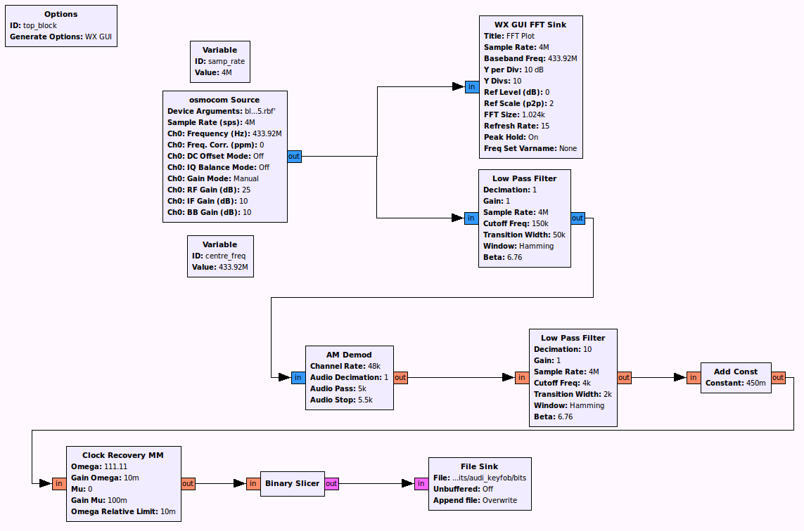
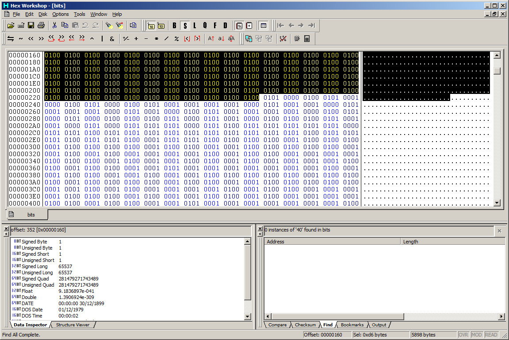

Developing an ASK receiver step-by-step
Configure the GNU Radio environment
Follow the steps in the FSK receiver example up to the point of receiving the baseband signal. In our case the signal (from an Audi A4 keyfob) is at 433.920MHz:

Signal visualization and identification
Open the file in Baudline (see FSK receiver for details of how to do this):

You can see at the beginning of the data burst (the preamble), the signal alternates between a large amplitude and zero down the screen (time axis). This clearly shows that the signal has been modulated using Amplitude Shift Keying (ASK), which is also known as On-Off Keying (OOK).
Filtering
We now want to focus in on the signal of interest and filter out any other signals present in the baseband we have recorded. Add a "Low Pass Filter" block between the "Multiply" block output and the "WX GUI FFT Sink" input.
- Set "Cutoff Freq" to 150e3 - this is the maximum frequency (of the modulated signal) that we want to display
- Set "Transition Width" to 50e3 - this is the bandwidth over which the filter will act i.e. the smaller the number the more aggressive the filter.
Restart the flow-graph and you should see something like this:

Demodulating
We are making the assumption that based on the output we observed in Baudline, the modulation scheme is ASK (to be precise, "2-ASK" or "Binary ASK" where the amplitude is increased for a "1" and remains low for a "0"). Therefore, we need to add an ASK demodulator - "AM Demod) Add a "Quadrature Demod" and set the "Gain" to be 1.
Add a "File Sink" and set its input type to be "float" (orange coloured) and set the filename to be something like "4M_filtered_demod"
Connect the output of the "Low Pass Filter" to the input of the "AM Demod"
Set the following "AM Demod" settings:
- "Channel Rate": 48e3
- "Audio Decimation": 1
Connect the output of the "AM Demod" to the input of the "File Sink"
In "File Source" set "Repeat to "No"
Your flow-graph should now look like this:

Run the flow-graph and it will produce a file that hopefully will contain demodulated data.
Visualising the data
We should now have a demodulated file that can be loaded into Baudline.
Note: Remember, if your "4M_filtered_demod" file is larger than 50Mb then you will need to split it into chunks again.
Start Baudline and load your demod file - use all the same parameters as before, but this time change "Channels" to 1 (it is no longer a complex baseband signal - it is a demodulated signal). Click "Open" and it should look something like this:

Ensure that the separate "Waveform" window is open (main menu -> displays -> waveform)

These are the data bits represented by the original complex baseband signal we saw in Baudline. It also confirms that the data was modulated using 2-ASK.
Further filtering and clock recovery
If we look at the signal with respect to the scale, we can see that by choosing a peak, it's approximately 3.6 bits per millisecond, so it looks like 3600 Baud.

Ok, now we think we have the Baud rate, we can accurately add a new "Low Pass Filter" in between the "AM Demod" and the "File Sink". The settings should be as follows:
- Cutoff Freq = 4000 (roughly the Baud rate)
- Transition Width = 2000 (roughly half the Baud rate)
Also, you may have noticed that the flow-graph has been running very slowly since we started demodulating the data. Let's try and work out why:
The sample rate is currently 4,000,000 and the Baud rate is 3600, so if we divide 4,000,000 by 3600 we get the number of samples per symbol - 1111! That's why it's running slowly... we don't need anywhere near 1111 samples to represent each bit.
In the "Low Pass Filter" set "FIR Type" to "Float-Float (Decimating)" and set "Decimation" to 10. This will decimate the signal (reduce the sample rate) by a factor of 10
Now re-run the flow-graph and load the resulting demodulated file into Baudline and the "Waveform view" should now look like this:
Note: When you load the file back into Baudline don't forget that the sample rate has been decimated by 10 and is now, therefore, 40,000 instead of 4,000,000

We're not quite ready to recover the bits yet though, as the signal should be alternating about 0dBm (the centre line in the waveform view. It's actually down towards -90dBm, so it needs to be increased.
Add an "Add Const" block in between the second "Low Pass Filter" and the "File Sink" and set the "Constant" value to be 0.45 (this value was determined through trial-and-error), to increase the signal level. The output should now look like this:

Data recovery
Now we are ready to recover the digital data. First we need to perform clock recovery - add a "Clock Recovery MM" block and set the following values:
- "Gain Omega": 0.01
- "Mu": 0
- "Gain Mu": 0.1
- "Omega Relative Limit": 0.01
The final value we need is "Omega" - this is the number of samples per symbol. We previously calculated this to be 1111.11 and so decimated the signal by a factor of 10 so "Omega" now needs to be set to 111.11 (1111.11 / 10).
Add a "Binary Slicer" to the output of the "Clock Recovery MM" block
Add a "File Sink" to the output of the "Binary Slicer" - you'll need to set the input type of the "File Sink" to "Byte" (pink coloured). Set the filename to be something like "bitfile"
Your final flow-graph should look something like this:

Open up the "bitfile" file in a hex editor. Remember the preamble of "0101010101..."? You need to search for the preamble in the "bitfile", but if you look carefully, you can see that each byte in the file represents one bit i.e a "0" bit is represented by the byte "00" and a "1" bit is represented by the byte "01", so to search for the preamble you need to search for: "0001000100010001". The result of the search is shown below, the rest of the data follows the preamble:

You have now successfully retrieved the data from an ASK RF transmission!
Communicating with the receiver in real-time
Rather than using a file as a sink you can use a "TCP Sink" block, bind it to a socket and receive data from it via TCP